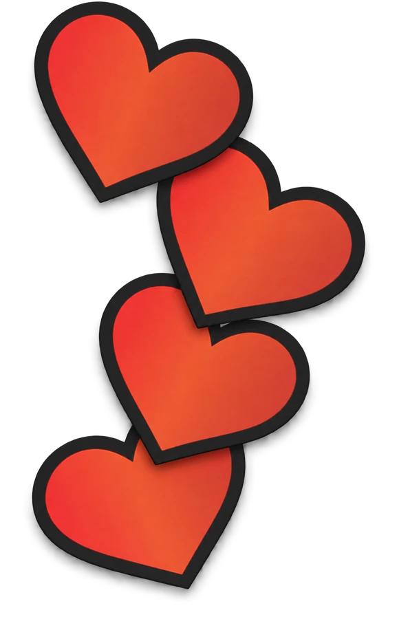
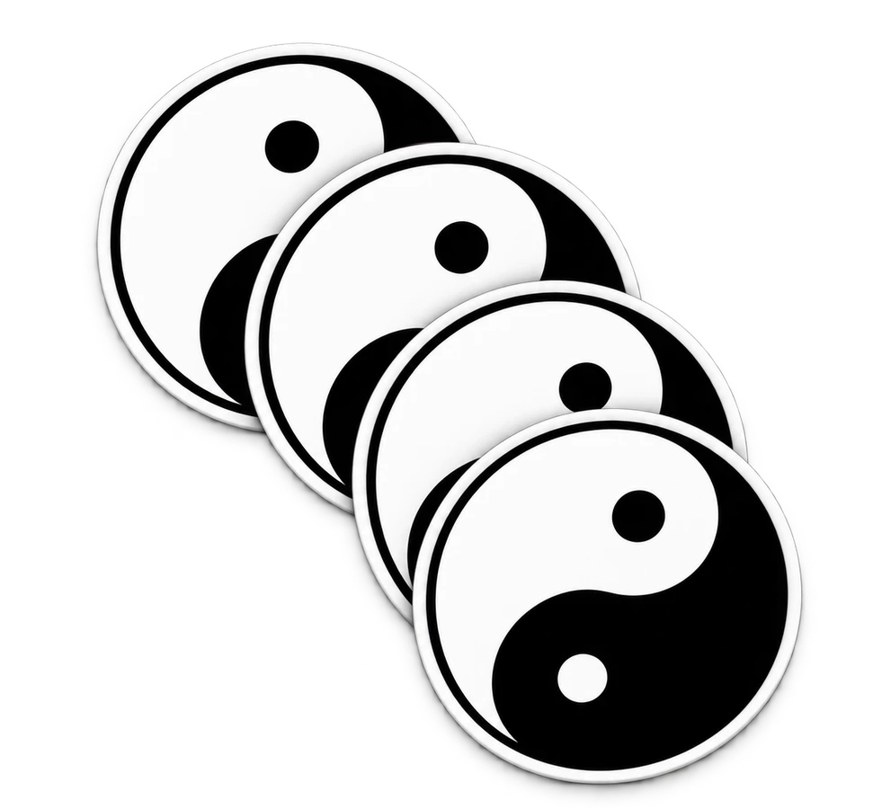
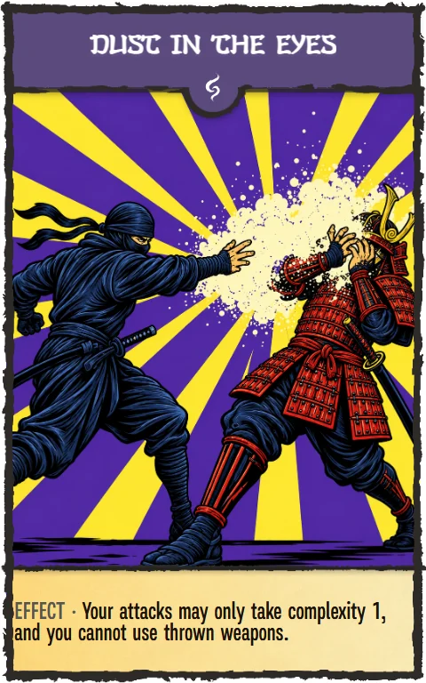

RUEN









Attack
Up to 2 per turn. A weapon reaches the target if its complexity ≥ the target's (usually 1); thrown — anyone. One modifier. Fists — 1/1 for both attacks.
Intervention
Outside your turn: «Dragon Strike» finishes a wounded player for 1. Everything played is simultaneous; the order is picked by whoever's life is at stake.
Defense
Your own — attack blocked, attacker's bonuses do not fire. An ally's, as an intervention: one card — wounds down to 1, two from the team — to 0. The defenceless cannot be saved.
Trap
One, face down, figure on top. Fires when you are attacked and do not defend; thrown weapons do not wake it. Planted something else — you die.
Aura
Above the stance, one per player, banner on top. Affects everyone at the table; a team's auras stack. New one — the old returns to hand.
Effects
To the right, face up, any number. Permanent — until death, one-shot — until they fire. No two of the same name. Living players only.
Character and role
Life — the number in the heart, also the maximum for full health. Role next to it: Samurai or Ninja. 0 life — dead until the end of the turn: point to the killer, face-up cards discarded, nobody touches you. Alive from the next turn; on your own turn — recovery: discard any cards, draw back up to 7.
Hand
Start — 7. At the start of your turn no more than 9, discard the rest. At the end of your turn draw 3 (smaller team +1), then every opponent draws 1. Unlimited between turns.
 Points
Points
Start — 4. A kill takes one from the victim. Anyone at 0 — game over.
Poison
End of turn −2; poisoned attack on you +1. Death by poison — no recovery.
Stance
Once per turn, one. Works right away. New one — the old returns to hand.